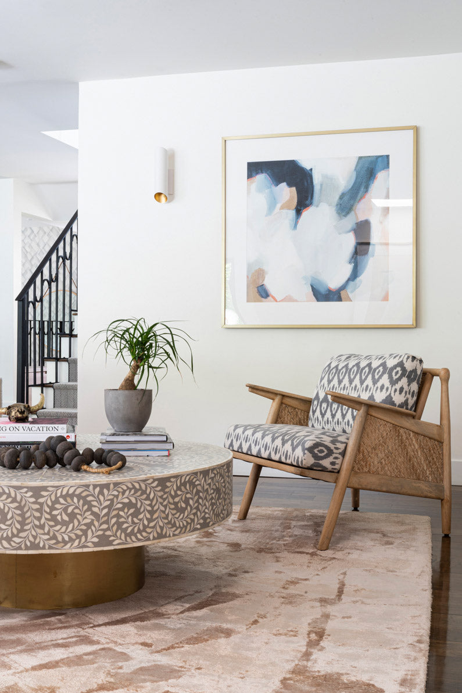
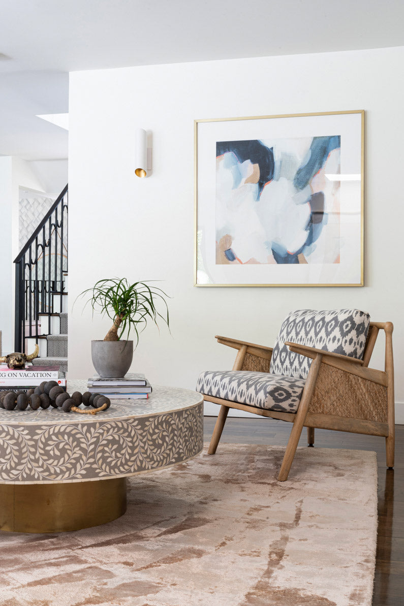
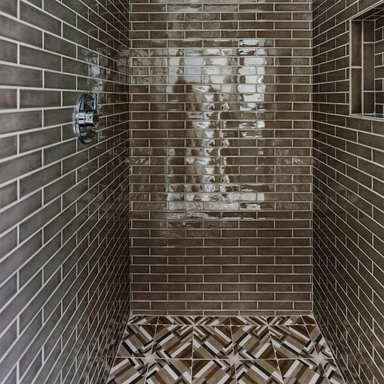
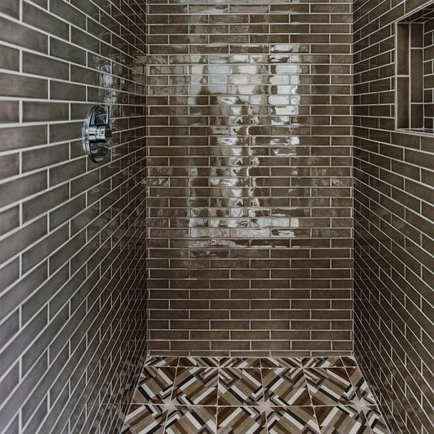

Expert Interior Design in Culver City
JAC Interiors brings expert interior design services to Culver City. Whether you're renovating, remodeling, or building new, our team creates modern urban living that reflect your lifestyle and the character of Culver City.
From concept to completion, we handle every detail of your Culver City interior design project. Our full-service approach includes space planning, furniture selection, custom cabinetry, lighting design, and complete project management.
Expert Interior Design in Culver City
JAC Interiors brings award-winning interior design services to Culver City. Whether you're renovating, remodeling, or building new, our team creates beautiful, functional spaces that reflect your lifestyle and the unique character of Culver City.
From concept to completion, we handle every detail of your Culver City interior design project. Our full-service approach includes space planning, furniture selection, custom cabinetry, lighting design, and complete project management.
Our Services Include:
- Full-Service Interior Design & Project Management
- Kitchen & Bathroom Remodeling
- Living, Dining & Bedroom Design
- Custom Built-Ins, Cabinetry & Closets
- Lighting Design & Art Curation
- Space Planning & Custom Floorplans
- Furniture Selection & Décor Curation
- 3D Renderings & CAD Drafting
- Design-Build Collaborations
Culver City has traditionally been a movie making town but there’s far more to this growing enclave of Los Angeles than Sony studios and the film industry. The city is nestled in between some of the trendiest and up and coming LA neighborhoods like Mar Vista to the north and Venice and Playa Vista to the west. Culver City has really blossomed over the last few years, thanks to the redevelopment of Downtown Culver City and the arrival of the Metro Expo Line. Highly pedestrian-friendly, it’s a destination that offers a multitude of options every single day. In fact, we’ve even moved our JAC offices to the Helms Design District, above the HD Buttercup furniture showroom. We love the cobbled stone streets and sourcing interior furnishing in this historic design quarter. Walking over to The Platform for lunch and midday shopping are a total bonus!
Whether you want to tour a classic movie studio, explore great shopping or dining, or want to take in some culture, there are loads of fun things to do in Culver City. If lodging is in order, make sure you check out the Palihotel Culver City, a boutique destination designed for creative travelers of all ages. And don’t forget the most unusual museum of curiosities this side of Mars, The Museum of Jurassic Technology, a viewing and sensory experience you won’t soon forget!


 



 



Ready to Transform Your Culver City Home?
Contact JAC Interiors today for a consultation. Let's create a beautiful space you'll love.
Get in Touch